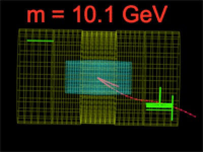

| In the decay to two muons (a dimuon), the muons penetrate all the way through the tracker and calorimeters. They are detected in the outer muon chambers that you see lit up in the event display and appear as red lines. If the invariant mass of the dimuons is close to 9.46 GeV, the invariant mass of the Upsilon, it probably has the parent particle Upsilon. | ||||||||
|  | ||||||||
|
||||||||